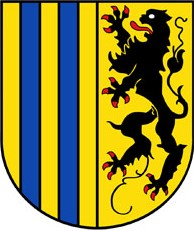

Chemnitz
Großstadt in Sachsen, Deutschland
Chemnitz (von 1953 bis 1990 Karl-Marx-Stadt) ist eine kreisfreie Stadt im Südwesten des Freistaates Sachsen und dessen drittgrößte Großstadt nach Leipzig und Dresden. Wegen Rauch- und Schmutzentwicklung während der Industrialisierung erhielt Chemnitz den Beinamen Sächsisches Manchester.
Wappen
Deutschlandkarte


Basisdaten
Koordinaten:
50° 50′ N, 12° 55′ O
Bundesland:
Sachsen
Höhe:
297 m ü. NHN
Fläche:
221,03 km2
Einwohner:
245.150 (31. Dez. 2023)
Bevölkerungsdichte:
1109 Einwohner je km2
Postleitzahlen:
09111–09131, 09224, 09228, 09247
Vorwahlen:
0371, 037200, 037209, 03722, 03726
Kfz-Kennzeichen:
C
Gemeindeschlüssel:
14 5 11 000
LOCODE:
DE CHE
NUTS:
DED41
Stadtgliederung:
39 Stadtteile inkl. 8 Ortschaften
Adresse der Stadtverwaltung:
Markt 1 09111 Chemnitz
Website:
www.chemnitz.de
Oberbürgermeister:
Sven Schulze
Lage der Stadt Chemnitz in Sachsen

Burg Rabenstein
Die Innenstadt von Chemnitz mit Blick auf
den "Roten Turm"
Das Karl-Marx-Monument als Denkmal an die kommunistische Einheit vor 1989
Hotel Mercure. Kongkress. Jetzt Hotel Achat